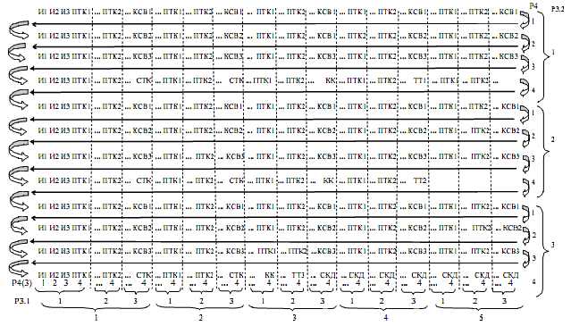
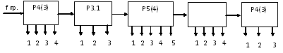
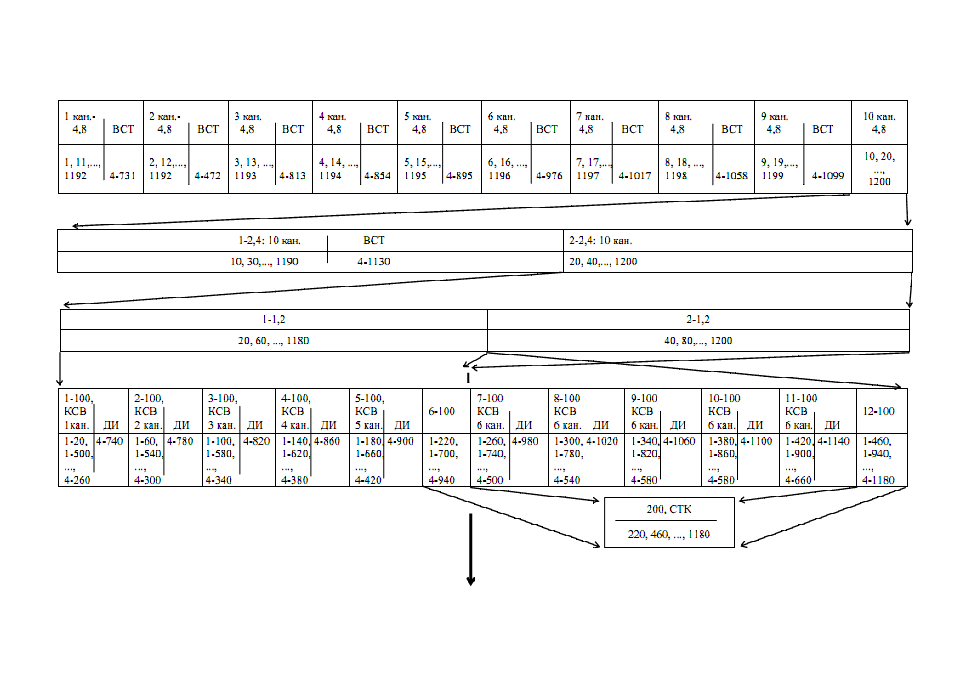
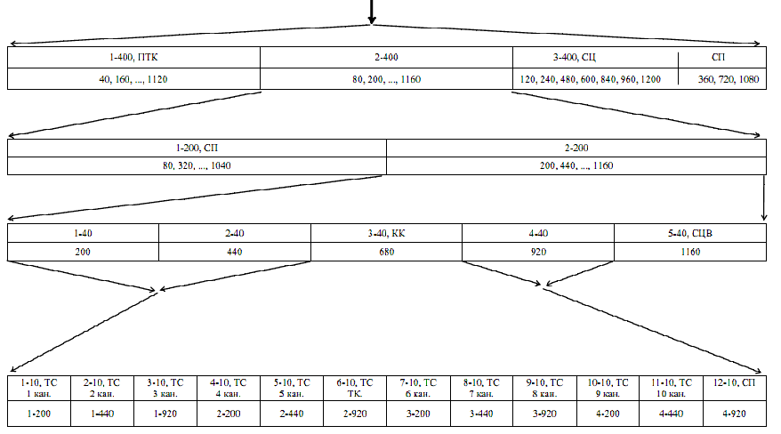
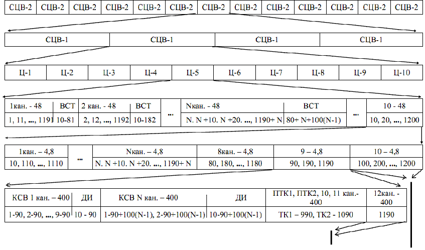
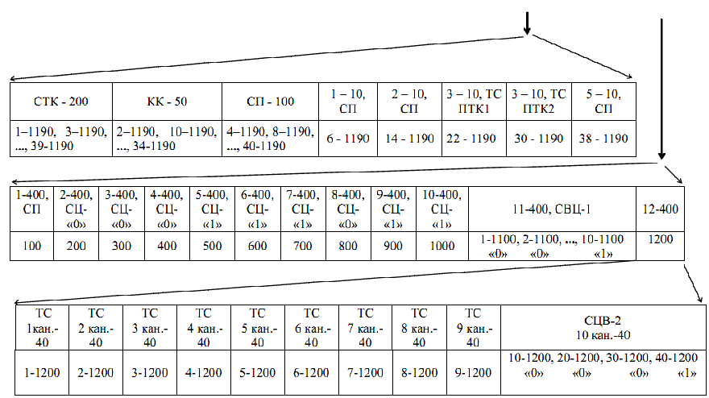
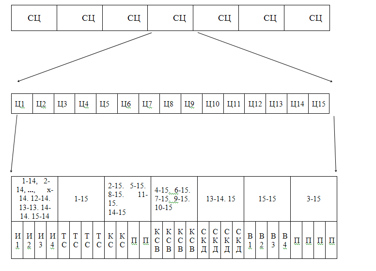
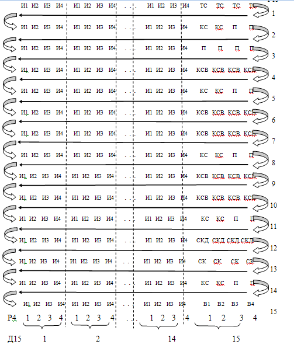

Тема №6. Эксплуатация военных систем передачи полевых кабельных линий связи и кроссовых устройств
Занятие№3. Устройство и принцип работы аппаратуры объединения (разделения) цифровых сигналов.
Учебные вопросы:
Литература:
1. Назначение, состав и технические характеристики моноблока ИО-1.
Аппаратура ИО-1 предназначена для временного объединения и разделения цифровых каналов (КЦ) со скоростями передачи 1,2; 2,4 или 4,8 кбит/с, образования «прозрачных» телеграфных каналов (ПТК) со скоростями до 100 или 200 Бод, служебного стартстопного телеграфного канала (СТК) 50 Бод и синхронного контрольного канала (СКК) со скоростями 20,37 или 40,74 бит/с. Групповой сигнал ИО-1 может вводиться в цифровые каналы ИО-2 или передаваться по линиям связи, а также каналам и трактам другой аппаратуры, сопрягающейся с ИО-1. Аппаратура ИО-1 обеспечивает организацию транзита на линейный выход аппаратуры без обработки входного сигнала первого КЦ и входного группового сигнала на выход первого цифрового канала.
Аппаратура ИО-1 имеет семь основных режимов работы Виды и количество образуемых каналов и номинальные скорости по ним приведены в табл. 1.
Управление переключением указанных в таблице режимов производится раздельно для передающей и приемной частей.
Аппаратура имеет три дополнительных режима работы:
- режим синхронного транзита группового сигнала с одного комплекта аппаратуры на другой с возможностью ответвления любого канала (режим О) и дистанционного управления ответвлением служебного и контрольного каналов;
- режим внешней синхронизации тактовой частоты передающей части аппаратуры ИО-1 при синхронном вводе в каналы, образуемые ИО-2 (режим С);
- режим внешнего управления фазой группового сигнала передающей части ИО-1 биимпульсным сигналом, поступающим извне со скоростью, соответствующей групповой скорости аппаратуры ИО-1 (режим Ф).
Во всех трех дополнительных режимах может использоваться любой из шести основных режимов.
Таблица 1
| Режим | Номинальные скорости передачи по цифровым каналам, бит/с | Номинальные скорости телеграфирования по ТГ каналам, Бод | Скорость группового сигнала, кбит/с | ||||||
|---|---|---|---|---|---|---|---|---|---|
| КЦ 1 | КЦ 2 | КЦ 3 | СКК | ПТК 1 | ПТК 2 | СТК | |||
1 |
- |
1200 |
- |
20,37 |
0-100 |
0-100 |
50 |
2,4 |
|
2 |
1200 |
1200 |
1200 |
20,37 |
0-100 |
0-100 |
50 |
4,8 |
|
3 |
2400 |
1200 |
- |
20,37 |
0-100 |
0-100 |
50 |
4,8 |
|
4 |
Синхронно 1200 - 1200 |
1200 |
20,37 |
0-100 |
0-100 |
50 |
4,8 |
||
5 |
2400 |
2400 |
2400 |
40,74 |
0-200 |
0-200 |
50 |
9,6 |
|
6 |
4800 |
2400 |
- |
40,74 |
0-200 |
0-200 |
50 |
9,6 |
|
Т |
Транзит входа КЦ 1 на групповой выход аппаратуры и группового входа аппаратуры на выход КЦ 1. |
||||||||
Скорость многоканального сигнала передачи (приема) 2,4; 4,8 или 9,6 кбит/с.
Относительная нестабильность скорости многоканального сигнала передачи не превышает ±2?10-7 (при внешней синхронизации тактовой частоты многоканального сигнала и внешнем управлении фазой – до ±1?10-4).
Форма многоканального сигнала на групповом выходе (входе) аппаратуры – биимпульсная.
Групповой выход аппаратуры симметричный, размах выходного сигнала равен 2 В на нагрузке 150 Ом.
Групповой вход аппаратуры симметричный, входное сопротивление 150 Ом.
Исправляющая способность входного группового устройства (для искажений типа «преобладание») – ±25 % от длительности единичного элемента биимпульсного сигнала.
Среднее время установления циклового синхронизма приемной части аппаратуры не более 2 сек.
Номинальное значение опорной частоты 5 МГц при долговременной (за 6 месяцев) нестабильности не хуже 2?10-7.
Напряжение питания аппаратуры равно (27 ) В.
Потребляемая мощность не превышает 21 Вт.
Габариты аппаратуры 640?290?180 мм.
Масса аппаратуры не более 22 кг.
Аппаратура предназначена для работы в условиях:
- температуры окружающей среды от минус 30°С до плюс 50°С;
- влажности не более 98 % при температуре не выше 35°С;
- атмосферного давления не ниже 61 кПа (460 мм рт. ст.);
- вибрационных нагрузок с ускорением до 49 м/с2 (5q) в диапазоне частот от 5 до 300 Гц;
- ударных нагрузок с ускорением до 147 м/с2 (15q) при длительности импульса до 10 мс.
Электрические характеристики каналов 1,2 кбит/с:
- номинальная скорость передачи символов 1,2 кбит/с;
- допустимая относительная нестабильность тактовой частоты информационного сигнала, поступающего на вход канала, не более ±5?10-4;
- вход канала симметричный, входное сопротивление 150 Ом;
- форма сигнала на входе (выходе) канала – биимпульсная;
- размах сигнала на входе канала в пределах 0,2-2,3 В;
- исправляющая способность входного устройства канала для искажений типа «преобладание» равна ±25 % от единичного элемента биимпульсного сигнала;
- выход канала симметричный, размах выходного сигнала 2 В на нагрузке 150 Ом;
- фазовые дрожания на выходе канала не более ±12% от длительности единичного элемента биимпульсного сигнала.
Электрические характеристики каналов 2,4 кбит/с:
- номинальная скорость передачи символов 2,4 кбит/с;
- допустимая относительная нестабильность тактовой частоты информационного сигнала, поступающего на вход канала, не более 10-4;
- параметры входа и выхода каналов 2,4 кбит/с и 1,2 кбит/с
Электрические характеристики канала 4,8 кбит/с:
- номинальная скорость передачи символов 4,8 кбит/с;
- допустимая относительная нестабильность тактовой частоты информационного сигнала, поступающего на вход канала, не более ±1?10-4;
- параметры входа и выхода каналов 4,8 кбит/с и 1,2 кбит/с идентичны.
Электрические характеристики «прозрачных» телеграфных каналов:
- скорость телеграфирования при работе аппаратуры на скоростях многоканального сигнала 2,4 или 4,8 кбит/с не более 100 Бод, а при работе со скоростью 9,6 кбит/с – не более 200 Бод;
- входной сигнал – двухполюсные телеграфные посылки с напряжением в пределах от ±5 до ±25 В;
- вход канала симметричный или несимметричный, входное сопротивление 1000 Ом;
- напряжение срабатывания входного устройства канала для посылки отрицательной полярности в пределах 0-3 В;
- разность абсолютных величин напряжений срабатывания входного устройства канала не более 0,5 В;
- выход канала симметричный или несимметричный, выходное сопротивление в пределах от 51 до 510 Ом;
- выходной сигнал канала имеет форму двухполюсных телеграфных посылок;
- выходное напряжение ±20 В на нагрузке 1000 Ом;
- расхождение между величинами напряжений положительной и отрицательной полярности не более 7 % от средней величины выходного напряжения при нагрузке 1000 Ом;
- длительности фронтов телеграфного сигнала при активном сопротивлении нагрузки 1000 Ом – не более 0,3 мс;
- увеличение краевых искажений на выходе канала не более ±5% от длительности единичного интервала.
Электрические характеристики служебного телеграфного канала:
- служебный канал рассчитан на передачу сигналов стартстопных телеграфных аппаратов, работающих кодом МТК-2 и имеющих 7,5-контактное деление распределителя;
- номинальная скорость телеграфирования 50 Бод;
- отклонение скорости телеграфирования от номинального значения не более ±0,8 %;
- параметры линейных окончаний служебного телеграфного канала аналогичны соответствующим параметрам «прозрачных» телеграфных каналов.
Электрические характеристики синхронного контрольного канала.
1. Цепь «передаваемые данные» канала:
- номинальная скорость передачи символов при скоростях многоканального сигнала 2400 и 4800 бит/с – 20,37 бит/с, а при скорости 9600 бит/с – 40,74 бит/с;
- входное устройство рассчитано на прием двухполюсных посылок постоянного тока с максимальным напряжением ±15 В;
- вход цепи – несимметричный, входное сопротивление от 3 до 7 кОм;
- напряжение срабатывания входного устройства для посылок отрицательной полярности от -3 до -5 В, положительной полярности – от 3 до 5 В.
2. Цепи «синхронизация элементов передаваемого сигнала» и «синхронизация элементов принимаемого сигнала» канала:
- выходной сигнал цепи – двухполюсные посылки постоянного тока с амплитудой от ±5 до ±15 В на сопротивлении нагрузки от 3 до 7 кОм;
- скважность выходного сигнала – 2 ± 10 %;
- выход цепи – несимметричный.
3. Цепь «принимаемые данные» канала:
- номинальная скорость передачи символов на скоростях многоканального сигнала 2400 и 4800 бит/с – 20,37 бит/с, а на скорости 9600 бит/с – 40,74 бит/с;
- выходной сигнал цепи – двухполюсные посылки постоянного тока с амплитудой от ±5 до ±15 В на сопротивлении нагрузки от 3 до 7 кОм;
- выход цепи несимметричный.
Общая длина цикла временного объединения равна 707 периодам тактовой частоты многоканального сигнала (при скоростях многоканального сигнала 4,8 и 9,6 кбит/с). Цикл строится по ступенчатому принципу, частота цикла при работе с групповой скоростью 4,8 кбит/с равна 6,79 Гц (4800:707»6,79).
Структура цикла временного объединения и структурная схема циклового распределителя показаны на рис. 1. и 2.
Первая ступень распределителя – Р4(3) вырабатывает 4 сдвинутых друг относительно друга импульсных последовательности из тактового сигнала с частотой 4,8 кГц. Один раз в цикле этот распределитель вырабатывает импульсы только в трех первых последовательностях, что приводит к сдвигу фазы в каждой из них на один период тактовой частоты многоканального сигнала. Благодаря этому сдвигу, частота следования импульсов в первых трех последовательностях в среднем за цикл увеличивается до величины 1201,7 Гц. Эти три последовательности определяют импульсные позиции для передачи информационных посылок цифровых каналов, с номинальной скоростью 1200 бит/с. В каждой из этих последовательностей выделены по 3 позиции в цикле, на которых могут передаваться либо информационные посылки, либо вставки. Эти позиции обозначены буквами И1, И2, И3 и отведены для 1, 2 и 3 цифровых каналов соответственно.
Четвертая последовательность импульсов с распределителя Р4(3) делится на три последовательности распределителем Р.3.1. Первые две из них используются для передачи информации 1 и 2 «прозрачных» телеграфных каналов. Эти позиции обозначены «ПТК1», «ПТК2».
Третья последовательность импульсов с распределителя Р3.1 используется для передачи сигналов служебного телеграфного канала, контрольного канала, сигнализации вставок, телесигнализации тестового контроля, синхрокода.
Синхрокод в аппаратуре 7-элементный, рассредоточенный. Чтобы рассредоточение посылок синхрокода было минимальным, под него используются 7 последних в цикле, расположенных друг за другом, позиций в четвертой последовательности импульсов распределителя Р4(3).».
Посредством третьего и четвертого распределителей (Р5(4) и Р4), третья последовательность импульсов с распределителя Р3.1 делится на 4 последовательности, каждая последовательность состоит из 5 импульсов, сдвинутых друг относительно друга. Первые три из них используются для передачи сигнализации вставок 1, 2 и 3 цифровых каналов (на рисунке эти позиции обозначены «КСВ1», «КСВ2», «КСВ3»).
Рис. 1. Диаграмма цикла временного объединения аппаратуры ИО-1
На рис. 1. использованы следующие обозначения:
- И1, И2, И3 – информационные позиции 1-4 каналов;
- ПТК1, ПТК2 – позиции «прозрачных» телеграфных каналов;
- СТК – позиции служебного телеграфного канала;
- КК – позиции контрольного канала;
- СКД – позиции синхрокода;
- КСВ1, КСВ2, КСВ3 – позиции вставки 1 – 3 каналов;
- ТТ1, ТТ2, ТТ3 – позиции телесигнализации тестового контроля и цифровых каналов
Рис. 2. Структурная схема циклового распределителя
Четвертая импульсная последовательность используется для передачи сигналов служебного телеграфного канала (СТК), контрольного канала (КК) и телесигнализации тестового контроля цифровых каналов (ТТ1, ТТ2, ТТ3 соответственно 1, 2 и 3 каналов).
Трехкратная передача вставок и команд вставок в цикле обеспечивается пятым распределителем – Р3.2.
Таким образом, 707 тактовых интервалов многоканального сигнала, составляющие цикл, распределяются следующим образом:
- для образования трех цифровых каналов со скоростью передачи символов 1200 бит/с (включая интервалы, отведенные для передачи вставок) – 177?3=531 тактовый интервал;
- для образования двух «прозрачных» телеграфных каналов со скоростью телеграфирования до 100 Бод – 56?2=112 тактовых интервалов;
- для образования служебного телеграфного канала со скоростью телеграфирования 50 Бод – 6 тактовых интервалов;
- для образования синхронного контрольного канала с номинальной скоростью передачи символов 20,37бит/с – 3 тактовых интервала;
- для передачи команд вставок в цифровых каналах – 15?3=45 тактовых интервалов;
- для сигнализации текстового контроля цифровых каналов – 1?3=3 тактовых интервала;
- для синхрокода – 7 тактовых интервалов.
При скорости многоканального сигнала 9,6 кбит/с структура цикла остается той же, что и при 4,8 кбит/с, но значение тактовой частоты сигнала поступающего на вход циклового распределителя, удваивается. При этом удваиваются и скорости всех каналов, образуемых аппаратурой, кроме служебного телеграфного канала, скорость которого остается неизменной. Для этого позиции, отводимые для образования этого канала, используются для передачи информации лишь в каждом втором цикле.
При скоростях многоканального сигнала 4,8 и 9,6 кбит/с в аппаратуре ИО-1 имеется сверхцикл, состоящий из двух описанных выше циклов, образуемых для поочередной передачи прямой и инверсной синхрогрупп. Наличие сверхцикла позволяет опознать на приемной стороне, в каком из циклов передаются посылки служебного телеграфного канала при скорости 9,6 кбит/с.
При скорости многоканального сигнала 2,4 кбит/с порядок работы и входная тактовая частота циклового распределителя те же, что и при скорости 4,8 кбит/с. Отличие в том, что в многоканальном сигнале исключаются посылки 1 и 3 цифровых каналов, а оставшиеся посылки по длительности растягиваются вдвое. При этом длина сверхцикла (в отличие от других скоростей) равна 707 периодам тактовой частоты многоканального сигнала.
Для организации цифрового канала со скоростью 2,4 кбит/с (при скорости многоканального сигнала 4,8 кбит/с) или 4,8 кбит/с (при скорости 9,6 кбит/с) позиции, отводимые для передачи всех сигналов 1 и 3 цифровых каналов, объединяются для передачи сигналов только первого канала.
2. Назначение, состав и технические характеристики моноблока ИО-2.
Аппаратура ИО-2А (передающая часть) и аппаратуры ИО-2Б (приемная часть) предназначены для передачи по цифровым трактам с номинальной скоростью передачи символов 48 кбит/с, а также по цифровым каналам со скоростью передачи символов 48 кбит/с, образуемым аппаратурой ИО-3А и ИО-3Б, девяти синхронно-асинхронных цифровых каналов с номинальной скоростью передачи символов 4,8 кбит/с каждый.
Кроме того, аппаратура обеспечивает объединение одного синхронно-асинхронного канала с номинальной скоростью передачи символов 2,4 кбит/с, одного «прозрачного» телеграфного канала со скоростью передачи символов до 100 Бод, одного служебного телеграфного канала со скоростью передачи символов до 50 Бод и одного синхронного контрольного канала со скоростью передачи символов 40 бит/с, а также организацию транзита без обработки входного сигнала:
- в аппаратуре ИО-2А – первого канала на групповой выход;
- в аппаратуре ИО-2Б – многоканального на выход первого комплекта приемного индивидуального оборудования.
При попарном объединении каналов 4,8 кбит/с, аппаратура позволяет обеспечить до 4-х каналов со скоростью передачи символов 9,6 кбит/с.
Аппаратура ИО-2А обеспечивает образование многоканального сигнала со скоростью передачи символов 48 кбит/с путем поочередной передачи (посимвольное объединение) единичных элементов информационных сигналов всех 9 каналов 4,8 кбит/с.
Кроме того, в многоканальном сигнале, также на основе временного деления, предусмотрены единичные интервалы для образования канала 2,4 кбит/с, «прозрачного» и служебного телеграфных каналов, синхронного контрольного канала и других служебных целей.
Аппаратура ИО-2Б обеспечивает временное разделение многоканального сигнала со скоростью передачи символов 4,8 кбит/с и восстановление до исходного вида объединенных и переданных аппаратурой ИО-2А цифровых сигналов, для чего в аппаратуре ИО-2Б производятся преобразования цифровых сигналов, обратные преобразованиям, выполняемым в аппаратуре ИО-2А.
Отсутствие цифровых сбоев в каналах 4,8 кбит/с и 2,4 кбит/с, при независимом образовании тактовых частот в источниках данных 4,8 кбит/с и 2,4 кбит/с и аппаратуре объединения, обеспечивается при использовании асинхронного ввода сигналов методом двухстороннего (положительно-отрицательного) согласования скорости передачи символов цифрового сигнала.
Образование каналов со скоростью передачи 9,6 кбит/с производится путем использования единичных интервалов, отведенных в многоканальном сигнале для двух каналов 4,8 кбит/с. При этом увеличиваются вдвое номинальная скорость, число интервалов для образования зазоров при положительном согласовании скорости и число дополнительных интервалов для образования отрицательного согласования скорости.
Число команд сигнализации вставок и позиций для их передачи тоже удваивается.
В случае синхронности тактовых частот источников данных и частот, отводимых в многоканальном сигнале для передачи этих данных, отпадает необходимость проведения двустороннего согласования скорости, при этом аппаратура обеспечивает синхронный ввод сигналов источников данных в групповой тракт.
Образование в аппаратуре «прозрачного» телеграфного и служебного телеграфного каналов обеспечивается при использовании асинхронного ввода методом «скользящего индекса с подтверждением».
Количество каналов:
- синхронно-асинхронных со скоростью передачи символов 4,8 кбит/с – 9, при попарном объединении каналов обеспечивается до 4 каналов со скоростью передачи символов 9,6 кбит/с;
- синхронно-асинхронных со скоростью передачи символов 2,4 кбит/с – 1;
- «прозрачных» телеграфных со скоростью передачи символов до 100 Бод – 1;
- служебных телеграфных со скоростью передачи символов до 50 Бод – 1;
- синхронных контрольных со скоростью передачи символов 40 бит/с – 1.
Скорость передачи символов многоканального сигнала – 48 кбит/с.
Режимы работы аппаратуры ИО-2А:
- от задающего генератора 5 МГц аппаратуры ИП, аппаратуры ИГ или другого внешнего генератора опорной частоты с теми же параметрами;
- от задающего генератора 5 МГц с подстройкой фазы сигнала тактовой частоты многоканального сигнала с шагом ±0,96 % при воздействии управляющего сигнала;
- внешняя синхронизация по тактам и полному циклу по хронирующему сигналу специальной формы (колебания тактовой частоты с наложенным на них сигналом цикловой фазировки – из аппаратуры ИО-3А).
Долговременная относительная нестабильность скорости передачи символов многоканального сигнала за 6 месяцев не превышает:
- ±2?10-7 – при работе от аппаратуры ИП или ИГ;
- 10-4 – при работе от внешнего генератора опорной частоты или при подстройке фазы сигнала тактовой частоты под воздействием управляющего сигнала.
Форма сигнала на групповом выходе аппаратуры ИО-2А и на групповом входе аппаратуры ИО-2Б – биимпульсная.
Групповой выход аппаратуры ИО-2А – симметричный, амплитуда выходного сигнала равна 1 В на нагрузке 150 Ом.
Исправляющая способность входного группового устройства аппаратуры ИО-2Б ±25 % от длительности единичного элемента входного биимпульсного сигнала.
Групповой вход аппаратуры ИО-2Б – симметричный, входное сопротивление 150 Ом.
Амплитуда сигнала на групповом входе аппаратуры ИО-2Б в пределах 0,1-1,15 В.
Среднее время установления циклового синхронизма не более 0,5 сек.
Режимы тактовой и цикловой синхронизации аппаратуры ИО-2Б:
- по сигналу на групповом входе;
- по хронирующему сигналу специальной формы (колебания тактовой частоты с наложенным на них сигналом цикловой фазировки – из аппаратуры ИО-3Б при синхронном режиме передачи многоканального сигнала по каналу, разуплотняемому этой аппаратурой).
При совместной работе ИО-2А и ИО-2Б с аппаратурой ИО-3А и ИО-3Б обеспечивается синхронная передача многоканального сигнала аппаратуры ИО-2А по одному из девяти синхронно-асинхронных каналов 48 кбит/с аппаратуры ИО-3.
При синхронной передаче многоканального сигнала аппаратуры ИО-2 по десятому каналу ИО-3 (частично занятому), передача обеспечивается по всем каналам, кроме 8 и 9 (4,8 кбит/с), занимаемых в аппаратуре ИО-3 для передачи служебных сигналов. При организации в аппаратуре ИО-3 цифрового канала служебной связи кроме того занимаются 1, 3, 5 и 7 каналы 4,8 кбит/с (при попарном объединении – 1 и 2 каналы 9,6 кбит/с).
При совместной работе аппаратуры ИО-2А с аппаратурой ИО-2Б обеспечивается возможность синхронного транзита многоканального сигнала с ответвлением любых из каналов.
Аппаратура ИО-2А обеспечивает организацию транзита (без обработки входного сигнала) 1-го канала на групповой выход аппаратуры.
Аппаратура ИО-2Б обеспечивает организацию транзита (без обработки входного многоканального сигнала) на выход первого комплекта индивидуального оборудования.
Электропитание аппаратуры осуществляется от аппаратуры ИП или от сети, постоянного тока (27 ) В.Потребляемая мощность ИО-2А – 26 Вт, ИО-2Б – 40 Вт.
Габариты каждого вида аппаратуры 640?290?180 мм.
Масса аппаратуры ИО-2А не более 23 кг, масса аппаратуры ИО-2Б не более 24 кг.
Аппаратура предназначена для работы в условиях:
- температуры от минус 30°С до плюс 50°С;
- влажности не более 98 % при температуре не выше 35°С;
- атмосферного давления не ниже 61 кПа (460 мм рт. ст.);
- вибрационных нагрузок с ускорением до 49 м/с2 (5q) в диапазоне частот от 5 до 300 Гц;
- ударных нагрузок с ускорением до 147 м/с2 (15q) при длительности импульса до 10 мс.
Электрические характеристики каналов 4,8 кбит/с:
- номинальная скорость передачи символов 4,8 кбит/с;
- относительная нестабильность тактовой частоты информационного сигнала, поступающего на вход канала, не более 10-4;
- вход канала симметричный, входное сопротивление 150 Ом.
Имеется дополнительная цепь тактовой синхронизации для работы в синхронном режиме.
Форма сигнала на входе и выходе канала – биимпульсная.
Амплитуда сигнала на входе канала в пределах 0,1-1,1 В.
Исправляющая способность входного устройства канала (для искажений типа «преобладание») - ±25% от длительности единичного элемента входного биимпульсного сигнала.
Выход канала симметричный. Амплитуда выходного сигнала 1 В на нагрузке 150 Ом.
Фазовые дрожания цифрового сигнала на выходе канала не более ±12 % от длительности единичного элемента биимпульсного сигнала (по отношению к опорной фазе, выделяемой с помощью устройства дискретной автоподстройки фазы со скоростью отслеживания фазы 10-4).
При попарном объединении каналов для работы со скоростью передачи символов 9,6 кбит/с электрические характеристики соответствуют характеристикам для канала 4,8 кбит/с.
Электрические характеристики канала 2,4 кбит/с:
- номинальная скорость передачи символов 2,4 кбит/с;
- относительная нестабильность тактовой частоты информационного сигнала, поступающего на вход канала, не более 10-4.
- вход и выход канала 2,4 кбит/с и его параметры аналогичен входу и выходу канала 4,8 кбит/с.
Электрические характеристики «прозрачного» телеграфного канала:
- максимальная скорость телеграфирования не более 100 Бод;
- входной сигнал – двухполюсные телеграфные посылки с напряжением в пределах от ±5 до ±25 В;
- вход канала симметричный, входное сопротивление 1000 Ом;
- напряжение срабатывания входного устройства канала для посылки отрицательной полярности в пределах от минус 3 до 0 В, для посылки положительной полярности в пределах 0 до плюс 3 В;
- разность абсолютных величин напряжений срабатывания входного устройства канала не более 0,5 В;
- выход канала симметричный, выходное сопротивление в пределах 51-510 Ом;
- выходной сигнал имеет форму двухполюсных телеграфных посылок. Выходное напряжение ± 20 В на нагрузке 1000 Ом;
- расхождение между величинами напряжений положительной и отрицательной полярности не более 7 % от средней величины выходного напряжения при нагрузке 1000 Ом;
- длительности фронтов телеграфного сигнала при активном сопротивлении нагрузки 1000 Ом не более 0,3 мс;
- увеличение краевых искажений на выходе канала не более ±5 % от длительности единичного интервала.
Электрические характеристики служебного телеграфного канала:
- максимальная скорость телеграфирования не более 50 Бод;
- параметры входного и выходного устройств служебного телеграфного канала аналогичны соответствующим параметрам входного и выходного устройств «прозрачного» телеграфного канала;
- увеличение краевых искажений на выходе канала не более ±5 % от длительности единичного интервала.
Электрические характеристики синхронного контрольного канала.
1. Цепь «Передаваемые данные» контрольного канала:
- номинальная скорость передачи символов 40 бит/с;
- входное устройство рассчитано на прием двухполюсных посылок постоянного тока с максимальным напряжением ±15 В;
- вход цепи несимметричный, входное сопротивление в пределах 3-7 кОм;
- напряжение срабатывания входного устройства для посылок отрицательной полярности от минус 3 В до минус 5 В, положительной полярности 3-5 В.
2. Цепь «Принимаемые данные» контрольного канала:
- номинальная скорость передачи символов 40 бит/с;
- выходной сигнал цепи – двухполюсные посылки постоянного тока с амплитудой ±5-±15 В на сопротивлении нагрузки 3-7 кОм;
- выход цепи несимметричный.
3. Цепи «Синхронизация элементов передаваемого сигнала» и «Синхронизация элементов принимаемого сигнала» контрольного канала:
- выходной сигнал – двухполюсные посылки постоянного тока с амплитудой ±5-±15В на сопротивлении нагрузки 3-7 кОм;
- форма выходного сигнала – меандр, скважность 2;
- выход цепи несимметричный.
Временное объединение информационных, телеграфных, контрольного каналов, вспомогательных сигналов выполняется на циклической основе, для чего образуются цикл и сверхцикл передачи.
Общая длительность цикла со скоростью передачи символов 48 кбит/с равна 1200 периодам тактовой частоты многоканального сигнала. Частота следования цикла равна 40 Гц.
Длительность сверхцикла равна 4800 периодам тактовой частоты, т.е. четырем циклам. Частота следования сверхцикла равна 10 Гц.
Цикл и сверхцикл строятся по ступенчатому принципу, показанному на диаграмме построения цикла аппаратуры ИО-2, приведенной на рис. 3.
 Рис. 3. Структура цикла аппаратуры ИО-2
Каждая последовательность показана на диаграмме горизонтальной линией. Над линией указан номер последовательности, скорость передачи, сокращенное название сигнала, передаваемого этой последовательностью, название отдельных интервалов. Под линией указаны порядковые номера позиций в цикле и сверхцикле.
Например: |
6-4,8; 6 кан. |
ВСТ |
6, 16...1196 |
4-976 |
Шестая последовательность 4,8 кГц, передается шестой информационный канал 4,8 кбит/с, в каждом цикле отведены позиции с № 6 по № 1196 через 10 интервалов тактовой частоты многоканального сигнала; ВСТ – единичный интервал для положительного согласования скорости (вставка) – позиция в сверхцикле № 4 – 976 (четвертый цикл сверхцикла, 976 позиция в цикле).
Например: |
7-100; КСВ 6 кан. |
ДИ |
1-260, 1-740,..., 4-500 |
4-980 |
Седьмая последовательность 100 Гц, КСВ – команда сигнализации вставок, шестого информационного канала, в сверхцикле отведены позиции с № 1-260 по № 4-500 через 480 интервалов тактовой частоты многоканального сигнала; ДИ – дополнительный интервал для передачи информационных элементов 6 канала, позиция в сверхцикле № 4-980.
Кроме того, в диаграмме использованы обозначения:
- ПТК – телеграфный «прозрачный» канал;
- СК – служебный канал;
- КК – контрольный канал;
- ТС – канал телесигнализации;
- СЦ – канал синхронизации цикла;
- СВЦ – канал синхронизации сверхцикла;
- СП – свободная позиция.
Многоканальный сигнал 48 кбит/с делится на 10 последовательностей единичных интервалов с тактовыми частотами по 4,8 кГц каждая. Первые девять последовательностей предназначены для передачи информационных сигналов по 4,8 кбит/с каждый. Первый канал передается на 1, 11,…, 1191 позициях цикла, второй на 2, 12,…, 1192 позициях и т.д.
Десятая последовательность 4,8 кГц делится на две равномерные последовательности по 2,4 кГц, первая из которых отводится для передачи десятого информационного сигнала 2,4 кбит/с на 10, 30,…, 1190 позициях цикла.
Вторая последовательность 2,4 кГц делится на две равномерные последовательности по 1,2 кГц каждая. Первая из них делится на 12 равномерных последовательностей по 100 Гц каждая. Последовательности 100 Гц с первой по пятую и с седьмой по одиннадцатую используются для образования десяти каналов передачи команд сигнализации вставки (КСВ) и десяти дополнительных интервалов (ДИ) для передачи информационных элементов десяти информационных каналов при отрицательном согласовании скорости.
Команда сигнализации вставки первого канала передается на девяти позициях сверхцикла с № 1-20 по № 4-260 через 480 интервалов тактовой частоты, дополнительный интервал для первого канала предоставляется на позиции сверхцикла № 4-740.
Команда сигнализации вставки:
- первого канала передается на позициях с № 1-60 по № 4-300, дополнительный интервал – на позиции № 4-780;
- второго канала – с № 1-100 по № 4-340, дополнительный интервал – № 4-820;
- четвертого канала – с № 1-140 по № 4-380 и № 4-860;
- пятого канала – с № 1-180 по № 4-420 и № 4-900;
- шестого канала – с № 1-260 по № 4-500 и № 4-980;
- седьмого канала – с № 1-300 по № 4-540 и № 4-1020;
- восьмого канала – с № 1-340 по № 4-580 и № 4-1060;
- девятого канала – с № 1-380 по № 4-620 и № 4-1100;
- десятого канала – с № 1-420 по № 4-660 и № 4-1140.
При положительном согласовании скорости передается команда сигнализации вставки вида 111111111, при отрицательном согласовании скорости – 000000000.
Шестая и двенадцатая последовательности 100 Гц образуют равномерную последовательность 200 Гц, которая используется для передачи служебного телеграфного канала на позициях цикла с № 220 по № 1180 через 240 интервалов тактовой частоты многоканального сигнала.
Вторая последовательность 1,2 кГц делится на три последовательности по 400 Гц. Первая последовательность 400 Гц используется для передачи «прозрачного» телеграфного канала на позициях цикла с № 40 по № 1120 через 120 интервалов тактовой частоты многоканального сигнала.
Третья последовательность 400 Гц предназначена для образования сигнала цикловой синхронизации, представляющего семиэлементную синхрогруппу и три свободные позиции (для внешнего заполнения). На позиции цикла № 120 передается «1», № 240-«1», № 480-«0», № 600-«0», № 840-«1», № 960 «0», №1200-«1»; на свободных позициях № 360, 720, 1080 передаются «0».
Вторая последовательность 400 Гц разбивается на две равномерные последовательности по 200 Гц, первая из которых свободна, а вторая используется для передачи сигналов контрольного канала (КК), каналов телесигнализации (ТС) и передачи сигнала фазирования сверхцикла (СВЦ). Сигналы контрольного канала передаются на позиции цикла № 680, сигнал фазирования сверхцикла – на позиции № 1160 (№ 1-1160-«0», № 2-1160-«0», № 3-1160-«0», № 4-1160-«1». На позициях цикла № 200, 440, 920 передается телесигнализация, а именно:
- телесигнализация первого канала – на позиции сверхцикла № 1-200;
- второго канала – № 1-440;
- третьего канала –№ 1-920;
- четвертого канала – № 2-200;
- пятого канала – № 2-440;
- шестого канала – № 3-200;
- седьмого канала – № 3-440;
- восьмого канала – № 3-920;
- девятого канала – № 4-200;
- десятого канала – № 4-440;
- телесигнализация «прозрачного» телеграфного канала – на позиции № 2-920;
- позиция № 4-920 – свободна.
Единичные интервалы для положительного согласования скорости (вставок) отводятся, в зависимости от номера информационного канала в 1-10 последовательностях по 4,8кГц, в четвертом цикле сверхцикла на позициях:
- первого канала – № 4-731;
- второго канала – № 4-772;
- третьего канала – № 4-813;
- четвертого канала – № 4-854;
- пятого канала – № 4-895;
- шестого канала – № 4-976;
- седьмого канала – № 4-1017;
- восьмого канала – № 4-1058;
- девятого канала – № 4-1099;
- десятого канала – № 4-1130.
При организации каналов со скоростью передачи символов 9,6 кбит/с производится образование равномерных последовательностей по 9,6 кГц путем попарного объединения 1 с 6, 2 с 7, 3 с 8, 4 с 9 последовательностями по 4,8 кГц. При этом производится и попарное объединение соответствующих последовательностей по 100 Гц в равномерные по 200 Гц последовательности.
Для формирования сосредоточенного сигнала цикловой синхронизации многоканальный сигнал перегруппировывается путем смыкания десяти зазоров, отводимых для элементов синхросигнала и первоначально следующих с периодом частоты 400 Гц, и образования с частотой 40 Гц зазора длиной 10 единичных интервалов тактовой частоты многоканального сигнала на позициях цикла с № 1 по № 10, при этом позиция № 1 первого канала 4,8 кбит/с после смыкания зазоров перемещается на позицию № 11.
После перегруппировки производится поэлементное сложение «по модулю 2» многоканального сигнала с рекуррентной последовательностью с периодом 31 такт вида 1111100011011101010000100101100, которая может быть сформирована с помощью пятиразрядного регистра с логической обратной связью с третьего и пятого разрядов.
За начало рекуррентной последовательности принята пятая «1» из пяти идущих подряд «1». Начало рекуррентной последовательности совпадает со временем передачи элемента «1» сигнала фазирования сверхцикла после перегруппировки многоканального сигнала. В этом интервале производится установка в исходное состояние устройства, обеспечивающего генерацию рекуррентной последовательности.
Сигналы синхронизации цикла и фазирования сверхцикла рекуррентной последовательностью не «закрываются».
3. Назначение, состав и технические характеристики моноблока ИО-3.
Аппаратура ИО -3 предназначена для образования цифровых потоков с номинальными скоростями передачи символов 480, 240, 144 или 96 кбит/с (аппаратура ИО-3А (передающая часть)) и обратного преобразования данных цифровых потоков в девять цифровых каналов с номинальной скоростью передачи символов 48 кбит/с, синхронного канала служебной связи со скоростью передачи символов 19,2 кбит/с, двух «прозрачных» телеграфных каналов со скоростью передачи символов до 100 Бод, одного служебного телеграфного канала со скоростью передачи символов до 50 Бод и одного синхронного контрольного канала со скоростью передачи символов 50 бит/с (аппаратура ИО-3Б (приемная часть)).
Кроме того, аппаратура обеспечивает организацию транзита без обработки входного сигнала:
- в аппаратуре ИО-3А – девятого канала на групповой выход;
- в аппаратуре ИО-3Б – группового на выход первого комплекта приемного индивидуального оборудования.
В режимах 10?48, 5?48, 3?48 или 2?48, соответствующих скоростям передачи символов по групповому тракту 480, 240, 144 или 96 кбит/с, аппаратура обеспечивает синхронно-асинхронный ввод и вывод соответственно девяти, четырех, двух или одного цифровых сигналов со скоростью передачи символов 48 кбит/с каждый.
В каждом из режимов дополнительно предусмотрена возможность синхронного ввода и вывода еще одного цифрового сигнала со скоростью передачи символов 48 кбит/с (с выхода аппаратуры ИО-2А) с занятием в последнем для передачи служебных сигналов аппаратуры ИО-3 двух последовательностей по 4,8 кбит/с.
При дополнительном занятии в этом сигнале еще четырех последовательностей по 4,8 кбит/с обеспечивается возможность организации синхронного канала служебной связи со скоростью передачи символов 19,2 кбит/с.
Кроме того, в перечисленных режимах аппаратура обеспечивает образование двух «прозрачных» телеграфных каналов со скоростью передачи символов до 100 Бод, одного служебного телеграфного канала со скоростью передачи символов до 50 Бод и одного синхронного контрольного канала со скоростью передачи символов 50 бит/с.
Групповая скорость передачи символов – 480, 240, 144 или 96 кбит/с.
Долговременная относительная нестабильность групповой скорости передачи символов за 6 месяцев не превышает ± 2·10-7 при работе от аппаратуры ИП или ИГ.
Выход и вход многоканального цифрового сигнала аппаратуры осуществляется по линейному и внутристанционному стыкам.
Линейный стык:
- форма сигнала на групповом выходе аппаратуры ИО-3А и на групповом входе аппаратуры ИО-3Б – биимпульсная;
- групповой выход аппаратуры ИО-3А – симметричный, амплитуда выходного сигнала равна 1 В на нагрузке 150 Ом;
- групповой вход аппаратуры ИО-3Б – симметричный, входное сопротивление 150 Ом;
- амплитуда сигнала на групповом входе аппаратуры ИО-3Б в пределах 0,1-1,15 В.
Внутристанционный стык образован двумя несимметричными цепями информационной и тактовой синхронизации, сигналы по которым сфазированы так, что значащие моменты информационного сигнала совпадают с положительными фронтами импульсов тактовых колебаний. Логическому нулю сигналов соответствует напряжение величиной не более 0,4 В, логической единице – напряжение от 2,4 до 4,5 В. Сигнал тактовой синхронизации прямоугольный, равноскважный.
Исправляющая способность входного группового устройства аппаратуры ИО-3Б по линейному стыку для искажений типа «преобладание» – ± 25 % от длительности единичного элемента входного биимпульсного сигнала.
Среднее время установления циклового синхронизма не более 0,3 сек.
При совместной работе аппаратуры ИО-3А с аппаратурой ИО-3Б обеспечивается возможность синхронного транзита многоканального цифрового сигнала с ответвлением любых из каналов.
Аппаратура ИО-3А обеспечивает организацию транзита без обработки входного сигнала девятого канала на групповой выход (линейный стык) аппаратуры.
Аппаратура ИО-3Б обеспечивает организацию транзита без обработки входного многоканального сигнала (линейный стык) на выход первого комплекта индивидуального оборудования.
Электропитание аппаратуры осуществляется от аппаратуры ИП или от сети постоянного тока (27 ) В и аппаратуры ИГ.Потребляемая мощность не более:
- аппаратуры ИО-3А – 40 Вт;
- аппаратуры ИО-3Б – 42 Вт.
Габариты каждого вида аппаратуры 640?290?180 мм.
Масса аппаратуры ИО-3А не более 23 кг, аппаратуры ИО-3Б не более 24 кг.
Аппаратура предназначена для работы в условиях:
- температуры от минус 30 до плюс 50°С;
- влажности не более 98 % при температуре не выше 35°С;
- атмосферного давления не ниже 61 кПа (460 мм рт.ст.);
- вибрационных нагрузок с ускорением до 49 м/с2 (5q) в диапазоне частот от 5 до 300 Гц;
- ударных нагрузок с ускорением до 147м/с2 (15q) при длительности импульсов до 10 мс.
Электрические характеристики каналов 48 кбит/с:
- номинальная скорость передачи символов 48 кбит/с;
- относительная нестабильность тактовой частоты информационного сигнала, поступающего на вход канала, не более ± 5·10-5;
- вход канала симметричный, входное сопротивление 150 Ом, имеется дополнительная входная цепь синхронизации по тактам и полному циклу (колебания тактовой частоты 48 кГц с наложенным на них сигналом цикловой фазировки 10 Гц) для работы по каналу в синхронном режиме;
- форма сигнала на входе и выходе канала – биимпульсная;
- амплитуда сигнала на входе канала в пределах 0,1-1,15 В;
- исправляющая способность входного устройства канала (для искажений типа «преобладание») – ±25 % от длительности единичного элемента входного биимпульсного сигнала;
- выход канала симметричный, амплитуда выходного сигнала 1 В на нагрузке 150 Ом, имеется дополнительная выходная цепь синхронизации по тактам и полному циклу (колебания тактовой частоты 48 кГц с наложенным на них сигналом цикловой фазировки 10 Гц) для работы по каналу в синхронном режиме;
- фазовые дрожания цифрового сигнала на выходе канала не более ± 12% от длительности единичного элемента биимпульсного сигнала (по отношению к опорной фазе, выделяемой с помощью устройства дискретной автоподстройки фазы со скоростью отслеживания фазы 10-4).
Электрические характеристики синхронного канала 19,2 кбит/с:
- номинальная скорость передачи символов 19,2 кбит/с;
- вход и выход канала по внутристанционному стыку, образованному двумя несимметричными цепями – информационной и тактовой синхронизации, сигналы по которым сфазированы так, что значащие моменты информационного сигнала совпадают с положительными фронтами импульсов тактовых колебаний, сигнал тактовой синхронизации прямоугольный, скважность 2,5. Логическому нулю сигналов соответствует напряжение величиной не более 0,4 В, логической единице – напряжение от 2,4 до 4,5 В.
Электрические характеристики «прозрачных» телеграфных каналов:
- максимальна скорость телеграфирования не более 100 Бод;
- входной сигнал – двухполюсные телеграфные посылки с напряжением в пределах от ±5 до ±25 В;
- вход канала симметричный, входное сопротивление 1000 Ом;
- напряжения срабатывания входного устройства канала для посылки отрицательной полярности в пределах от 0 до минус 3 В, для посылки положительной полярности в пределах от 0 до 3 В;
- разность абсолютных величин напряжений срабатывания входного устройства канала не более 0,5 В;
- выход канала симметричный, выходное сопротивление в пределах 51-510 Ом;
- выходной сигнал имеет форму двухполюсных телеграфных посылок;
- выходное напряжение ±20 В на нагрузке 1000 Ом;
- расхождение между величинами напряжений положительной и отрицательной полярности не более 7 % от средней величины выходного напряжения при нагрузке 1000 Ом;
- длительности фронтов телеграфного сигнала при активном сопротивлении нагрузки 1000 Ом не более 0,3 мс;
- увеличение краевых искажений на выходе канала не более ±5 % от длительности единичного интервала.
Электрические характеристики служебного телеграфного канала:
- максимальная скорость телеграфирования не более 50 Бод;
- параметры входного и выходного устройства служебного телеграфного канала аналогичны соответствующим параметрам входного и выходного устройства «прозрачного» телеграфного канала;
- увеличение краевых искажений на выходе канала не более ±5% от длительности единичного интервала.
Электрические характеристики синхронного контрольного канала.
1. Цепь «Передаваемые данные контрольного канала»:
- номинальная скорость передачи символов 50 кбит/с;
- входное устройство рассчитано на прием двухполюсных посылок постоянного тока с максимальным напряжением ±15 В;
- вход цепи несимметричный, входное сопротивление в пределах 3-7 кОм;
- напряжения срабатывания входного устройства для посылок отрицательной полярности от минус 3 до минус 5 В, для посылок положительной полярности 3-5 В.
2. Цепь «Принимаемые данные» контрольного канала:
- номинальная скорость передачи символов 50 бит/с;
- выходной сигнал цепи – двухполюсные посылки постоянного тока с амплитудой ±5-±15 В на сопротивлении нагрузки 3-7 кОм;
- выход цепи несимметричный.
3. Цепи «Синхронизация элементов передаваемого сигнала» и «Синхронизация элементов принимаемого сигнала» контрольного канала:
- выходной сигнал – двухполюсные посылки постоянного тока с амплитудой ± 5-±15 В на сопротивлении нагрузки 3-7 кОм;
- форма выходного сигнала – меандр, скважность 2;
- выход цепи несимметричный.
Аппаратура ИО-ЗА обеспечивает временное объединение многоканального цифрового сигнала со скоростями передачи символов 480, 240, 144 или 96 кбит/с путем поочередной передачи (посимвольное объединение) единичных элементов информационных сигналов соответственно 9, 4, 2 или 1 каналов 48 кбит/с.
Кроме того, в многоканальном сигнале, на основе временного деления, предусмотрены единичные интервалы, отводимые для образования еще одного (частично занятого) синхронного канала 48 кбит/с, одного синхронного канала служебной связи со скоростью 19,2 кбит/с, телеграфных и контрольного каналов и других служебных сигналов.
Аппаратура ИО-ЗБ обеспечивает временное разделение многоканального сигнала со скоростями передачи символов 480, 240, 144 или 96 кбит/с и восстановление до исходного, переданных аппаратурой ИО-ЗА цифровых сигналов.
В аппаратуре ИО-ЗБ производятся преобразования цифровых сигналов, обратные преобразованиям, выполненным в аппаратуре ИО-ЗА.
Отсутствие цифровых сбоев в цифровых каналах 48 кбит/с при независимом образовании тактовых частот в источниках данных 48 кбит/с и аппаратуре объединения обеспечивается при использовании асинхронного ввода сигналов методом двустороннего (положительно-отрицательного) согласования скорости передачи символов цифрового сигнала.
В случае синхронности тактовых частот источников данных и частот, отводимых в многоканальном сигнале для передачи этих данных, отпадает необходимость проведения двустороннего согласования скорости: при этом аппаратура обеспечивает синхронный ввод сигналов источников данных в групповой тракт.
Образование в аппаратуре «прозрачных» телеграфных и служебного телеграфного каналов обеспечивается при использовании асинхронного ввода методом «скользящего индекса с подтверждением».
Временное объединение информационных, телеграфных, контрольного каналов и каналов для вспомогательных сигналов выполняется на циклической основе, для чего образуются цикл и сверхциклы передачи.
Общая длительность цикла передачи символов 480 кбит/с равна 1200 периодам тактовой частоты группового сигнала. Частота следования цикла равна 400 Гц.
Длительность первого сверхцикла СВЦ-1 равна 12000 периодам тактовой частоты, т.е. десяти циклам. Частота следования СВЦ-1 равна 40 Гц.
Длительность второго сверхцикла СВЦ-2 равна 48000 периодам тактовой частоты, т.е. 40 циклам. Частота следования СВЦ-2 равна 10 Гц.
Цикл и сверхцикл строятся по ступенчатому принципу, показанному на диаграмме построения цикла аппаратуры ИО-3, приведенной на рис.4.
 Рис. 4. Структура цикла аппаратуры ИО-3
Каждая последовательность показана на диаграмме горизонтальной линией. Над линией указан номер последовательности, скорость передачи, сокращенное название сигнала, передаваемого этой последовательностью, название отдельных интервалов. Под линией указаны порядковые номера позиций в цикле с № 1 по № 1200, в сверхцикле 1 – с № 1-1 по № 10-1200 или в сверхцикле 2 – с № 1-1 по № 40-1200 в зависимости от периодичности данной последовательности.
Например: . |
6-48, 6 кан. |
ВСТ |
6, 16...1196 |
10-586 |
Шестая последовательность 48 кГц, передается шестой информационный сигнал, в каждом цикле отведены позиции с № 6 по № 1196 через десять интервалов тактовой частоты группового сигнала, ВСТ – единичный интервал для положительного согласования скорости (вставка) – позиция в СВЦ-1 № 10-586.
Рассмотрим следующую запись:
7-400, КСВ 7 кан. |
ДИ |
|
1-690, 2-690,..., 9-690 |
10-90 |
Седьмая последовательность 400 Гц, КСВ – команда сигнализации вставки седьмого информационного канала, в СВЦ-1 отведены позиции с № 1-690 по № 9-690, в каждом цикле одна позиция, ДИ – дополнительный интервал для передачи информационных элементов седьмого канала, выделен на позиции № 10-690.
Кроме того, в диаграмме использованы обозначения:
- ПТК – телеграфный канал;
- СК – служебный канал;
- КК – контрольный канал;
- ТС – канал телесигнализации;
- СЦ – канал синхронизации цикла;
- СВЦ – каналы синхронизации сверхциклов;
- СП – свободная позиция.
В зависимости от установленной скорости передачи (480, 240, 144 или 96 кбит/с – режимы 10?48, 5?48, 3?48, 2?48) многоканальный сигнал делится на соответствующее число (10, 5, 3 или 2) последовательностей единичных интервалов с тактовыми частотами по 48 кГц каждая. В любом из этих режимов все эти последовательности, кроме последней, предназначаются для образования асинхронных или синхронных каналов по 48 кбит/с каждый.
Последняя последовательность 48 кГц делится на 10 равномерных последовательностей по 4,8 кГц. Первые восемь последовательностей предназначены для передачи соответствующей части информации синхронно вводимого сигнала 48 кГц.
В случае передачи информации цифрового канала служебной связи (ЦКС) используются 2, 4, 6 и 8 последовательности по 4,8 кГц (при соответствующем уменьшении передачи информации синхронно вводимого сигнала 48 кГц).
Девятая и десятая последовательности 48 кГц делятся, каждая, на 12 равномерных последовательностей по 400 Гц.
Десять первых последовательностей 400 Гц из десятой последовательности 4,8 кГц используются для канала СЦ, при этом последовательности со второй по десятую, предназначены для образования сигнала цикловой синхронизации, представляющего девятиэлементную. Первая последовательность из этих десяти не занимается.
Одиннадцатая последовательность 400 Гц десятой последовательности 4,8 кГц отводится для формирования сигнала фазирования первого сверхцикла СВЦ-1. На позициях с № 1-1100 по № 9-1100 передаются «0», на позиции № 10-1100 – «1». Двенадцатая последовательность 400 Гц в 10-й последовательности 4,8 кГц, фазируемая первым сверхциклом СВЦ-1, отводится для образования девяти каналов ТС и одного канала для передачи сигнала фазирования второго сверхцикла СВЦ-2. По каналу фазирования СВЦ-2 на позициях № 10-1200, № 20-1200, № 30-1200 передается «0», на позиции № 40-1200 – «1».
Девять первых последовательностей по 400 Гц из девятой последовательности 4,8 кГц отводятся для образования девяти каналов передачи команд сигнализации вставки (КСВ) и девяти дополнительных единичных интервалов (ДИ) для передачи информационных элементов девяти информационных каналов 48 кГц при отрицательном согласовании скорости. Для этих целей каждая из девяти последовательностей по 400 Гц, фазируемых первым сверхциклом СВЦ-1, делится на 10 последовательностей по 40 Гц. Девять первых последовательностей по 40 Гц в каждой из названных последовательностей используются для передачи помехозащищенных девятиэлементных команд сигнализации вставки вида 111111111 (положительное согласование) и 000000000 (отрицательное согласование).
Последние (десятые) девять последовательностей по 40 Гц отводятся для передачи информационных элементов (ДИ) при отрицательном согласовании скорости.
Единственные интервалы для положительного согласования скорости (вставок) отводятся (в зависимости от номера канала) в 1-9 последовательностях 48 кГц, в девятых последовательностях 4,8 кГц, в последовательностях 400 Гц, соответствующих номерам каналов, в десятом цикле СВЦ-1.
Десятая и одиннадцатая последовательности по 400 Гц из девятой последовательности 4,8 кГц отводятся для образования двух прозрачных телеграфных каналов с максимальной скоростью телеграфирования 100 Бод.
Двенадцатая последовательность 400 Гц из девятой последовательности 4,8 кГц, фазируемая первым (СВЦ-1) и вторым (СВЦ-2) сверхциклами, делится на последовательности 200, 50, 100 и пять последовательностей по 10 Гц.
Последовательность 200 Гц используется для образования служебного телеграфного канала с максимальной скоростью телеграфирования 50 Бод.
Последовательность 50 Гц используется для образования синхронного контрольного канала. Третья и четвертая последовательности по 10 Гц используются для образования двух каналов телесигнализации (ТС) и двух телеграфных каналов (ТК1 и ТК2). Оставшиеся последовательности 100 Гц и три по 10 Гц свободны.
Для формирования сосредоточенного сигнала цикловой синхронизации групповой сигнал перегруппировывается путем смыкания десяти зазоров, отводимых для канала СЦ и первоначально следующих с частотой 4,8 кГц, и образования с частотой 400 Гц зазора длиной 10 единичных интервалов групповой тактовой частоты на позициях цикла с № 1001 по № 1010. При этом позиция № 1001 первого канала 48 кбит/с после смыкания зазоров перемещается на позицию № 1011. После перегруппировки производится поэлементное сложение по модулю два многоканального сигнала с рекуррентной последовательностью вида 0000011100100010101111011010011, которая формируется с помощью пятиразрядного регистра сдвига с логическими обратными связями с третьего и пятого разрядов. За начало рекуррентной последовательности принят второй «0» из пяти идущих подряд «0». Начало рекуррентной последовательности совпадает с интервалом передачи последнего элемента сигнала цикловой синхронизации в десятом цикле СВЦ-1 после перегруппировки многоканального сигнала. В этом же интервале производится установка в начальное состояние устройства, обеспечивающего генерацию рекуррентной последовательности. Начало суммирования по модулю два совпадает по времени с третьим «0» из пяти идущих подряд «0» рекуррентной последовательности.
Сигналы синхронизации цикла и фазирования первого сверхцикла рекуррентной последовательностью не «закрываются».
4. Назначение, состав и технические характеристики моноблока ИО-4.
Аппаратура ИО-4 предназначена для временного объединения (передающая часть) и разделения (приемная часть) четырех асинхронных цифровых каналов с номинальными скоростями передачи символов 480 кбит/с каждый для совместной передачи по цифровым трактам с номинальной скоростью передачи символов 2048 кбит/с.
Кроме того, аппаратура ИО-4 обеспечивает образование асинхронного цифрового канала с номинальной скоростью передачи символов 240 кбит/с вместо одного (определенного) канала со скоростью 480 кбит/с и образование одного синхронного цифрового канала со скоростью передачи символов 22,75 кбит/с для организации канала служебной связи с помощью аппаратуры ИС.
Режимы работы аппаратуры:
- первый режим – образование четырех асинхронных каналов со скоростью передачи символов 480 кбит/с;
- второй режим – образование трех асинхронных каналов со скоростью передачи символов 480 кбит/с и одного асинхронного канала со скоростью передачи символов 240 кбит/с.
В обоих режимах обеспечивается образование вспомогательного синхронного цифрового канала со скоростью передачи символов 22,75 кбит/с для организации канала служебной связи с помощью аппаратуры ИС.
Аппаратура обеспечивает синхронный транзит многоканального сигнала с ответвлением любых из каналов.
Скорость передачи символов многоканального сигнала 2048 кбит/с.
Долговременная относительная нестабильность скорости передачи многоканального сигнала за 6 месяцев не превышает ±2?10-7.
Групповой выход передающей части аппаратуры имеет по внутристанционный стык, образованный двумя несимметричными цепями – информационной и тактовой синхронизации сигналы по которым сфазированы так, что значащие моменты информационного сигнала совпадают с положительными фронтами импульсов тактовых колебаний. Уровень логического «нуля» сигналов не более 0,4 В, уровень логической «единицы» от 2,4 до 4,5 В. Последовательность импульсов прямоугольная, равноскважная.
Групповой вход приемной части – аналогичен выходному.
Среднее время вхождения в цикловой синхронизм приемной части не более 100 мс.
Аппаратура имеет режим «проверки на себя».
Электропитание аппаратуры ИО-4 осуществляется от аппаратуры ИП, ИГ или от сети постоянного тока (27 ) В.Потребляемая мощность не более 45 Вт.
Габариты аппаратуры 640?290?180 мм.
Масса аппаратуры не более 22 кг.
Аппаратура предназначена для работы в условиях:
- температуры от минус 10 до плюс 50°С;
- влажности не более 98 % при температуре не выше 35°С.
Электрические характеристики каналов со скоростью передачи 480 кбит/с:
- номинальная скорость передачи символов 480 кбит/с;
- относительная нестабильность тактовой частоты информационного сигнала, поступающего на вход канала, не более ±2?10-5.
Вход канала по линейному и по внутристанционному стыку:
- вход канала – симметричный;
- форма сигнала на входе канала – биимпульсная;
- амплитуда входного сигнала – 0,1-1,15 В;
- входное сопротивление 150 Ом.
Исправляющая способность входных устройств каналов по линейному стыку (для искажений типа «преобладание») – ±25 % от длительности единичного интервала входного сигнала.
Фазовые дрожания сигнала на выходе не более ±12 % от длительности единичного интервала биимпульсного сигнала.
Электрические характеристики канала со скоростью передачи 240 кбит/с.
Номинальная скорость передачи символов 240 кбит/с.
Остальные электрические характеристики соответствуют номинальной скорости передачи символов 480 кбит/с.
Электрические характеристики синхронного цифрового канала.
Номинальная скорость передачи 22,75 кбит/с.
Вход канала имеет внутристанционный стык, образованный двумя несимметричными цепями - входной информационной и выходной тактовой синхронизации – сигналы по которым сфазированы так, что значащие моменты информационного сигнала совпадают с положительными фронтами тактовых импульсов. Импульсы тактовой синхронизации прямоугольные, скважность 3.
Уровень логического «нуля» сигналов не более 0,4 В, уровень логической «единицы» от 2,4 до 4,5 В.
Выход канала имеет внутристанционный стык, образованный двумя несимметричными цепями – выходной информационной и выходной тактовой синхронизации – с параметрами, аналогичными предыдущему пункту.
Временное уплотнение информационных, вспомогательных сигналов выполняется на циклической основе, для чего образуется общий цикл передачи длиной 900 интервалов тактовой частоты многоканального сигнала.
Цикл строится по ступенчатому принципу с тремя ступенями – 2048 кГц / 4 / 15 / 15 = 2,275 кГц
Структура группового сигнала ИО-4 приведена на рис. 5.
Рис. 5. Структура цикла аппаратуры ИО-4
Первая ступень распределения на 4 (Р4) обеспечивает посимвольное объединение информационных сигналов четырех каналов по 480 кбит/с.
Для упрощения оборудования остальные (вспомогательные) сигналы также передаются четверками.
Вторая ступень распределения на 15 (Д15) обеспечивает выделение каждой пятнадцатой четверки тактовых интервалов многоканального сигнала. Эти последние четверки в каждой группе четверок из пятнадцати используются для передачи вспомогательных сигналов (телесигнализации вставок, сигналов синхронного канала, цикловой синхронизации).
Предыдущие четырнадцать четверок используются для передачи информационных элементов каналов 480 кбит/с. Распределение в пределах цикла групп вспомогательных сигналов, отводимых для перечисленных целей, производится с помощью последней ступени распределения – второго распределителя на 15 (Р15). Среди этих пятнадцати групп вспомогательных сигналов четвертая, шестая, седьмая, девятая и десятая отводятся для сигнализации вставок. Этим обеспечивается сигнализация вставок пятиэлементным кодом. Значащие позиции для сигнализации вставок каждого из каналов привязаны к соответствующему положению первой ступени распределения на 4, благодаря чему достигается распределенная сигнализация вставок для каждого из каналов.
Во второй, пятой, восьмой, одиннадцатой и четырнадцатой группах два первых значащих интервала из каждой четверки вспомогательных сигналов используются для образования синхронного канала. Выбранные группы обеспечивают равномерное размещение в цикле пар значащих позиций для синхронного канала. Первая группа вспомогательных сигналов используется для образования четырех каналов телесигнализации. Для образования вставок отведена пятнадцатая группа вспомогательных сигналов (когда вставки не образуются, то на этих позициях передаются информационные элементы каналов).
Для образования сосредоточенного восьмиэлементного синхрокода используются две соседние четверки 14 и 15 в тринадцатой группе. Для этого в предыдущей двенадцатой группе пятнадцатая четверка освобождается от передачи вспомогательных сигналов и используется для передачи информационных сигналов. Поскольку общее число значащих позиций в цикле для передачи информационных сигналов 480 кбит/с (включая позицию для вставки) нечетно, то для организации канала 240 кбит/с вместо канала 480 кбит/с, образован сверхцикл передачи, состоящий из двух циклов.
Диаграмма цикла временного объединения аппаратуры ИО-4 приведена на рис. 6.
На рис. 5. и 6. приняты следующие обозначения:
- И1, И2, И3, И4 – информационные позиции;
- ТС – позиции телесигнализации 1-4 каналов;
- КС – позиции синхронного канала;
- П – свободные позиции;
- КСВ – позиции кода сигнализации вставки;
- СКД – позиции синхрокода;
- В1, В2, В3, В4 – позиции вставки 1-4 каналов.
Рис. 6. Диаграмма цикла временного объединения аппаратуры ИО-4